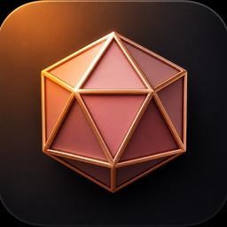

将 3D 模型拖入窗口即可预览并转换。转换不改变模型几何。可将结果导出为 Cinema 4D 可打开的 FBX / GLB 互换文件。
正在解析模型…
作者 marsbasex.com
一键转换 · 预览即所得
转换不改变模型几何。不会重网格、简化或缩放单位。导入由 assimpjs 完成；.blend 可通过本机 Blender CLI 预览并导出。.max 无法直接解析，请先在 3ds Max 导出 FBX。「C4D · FBX / C4D · GLB」写出 Cinema 4D 可打开的互换文件，不是原生 .c4d 工程文件。
Copyright © 2026 marsbasex.com
Blender 用于读取 .blend，以及将模型导出为 Cinema 4D 可用的 FBX（互换格式）。
常见安装路径会自动检测；也可手动指定。下载：blender.org